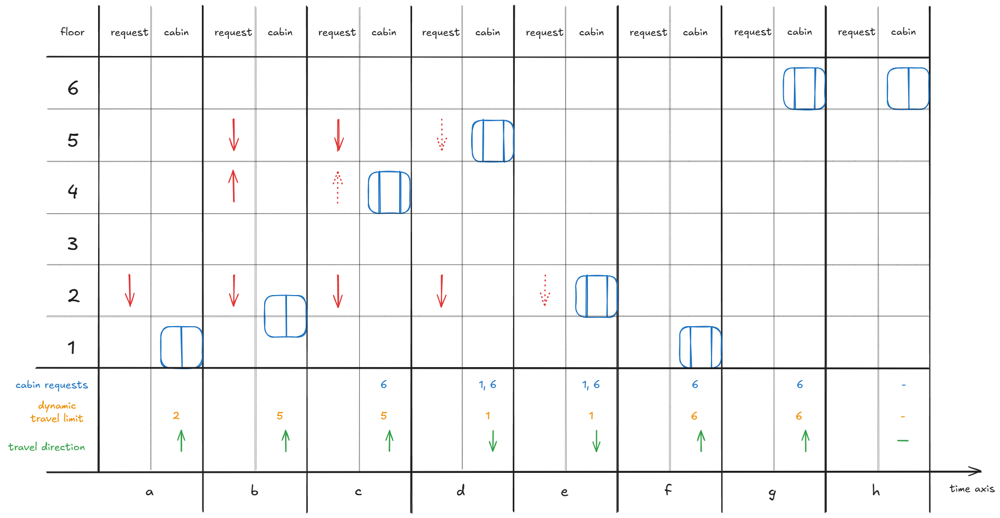

Queuing and Scheduling Algorithm
After I started implementing a custom priority-queuing algorithm yesterday, I realized that proper elevator-scheduling logic would be more complex than I had initially thought. I researched the elevator algorithm[1], destination dispatch[2], and an additional resource on programming an elevator system for a multi-storey building[3].
The scheduling methods I reviewed included:
- First Come, First Served (FCFS).
- Shortest Seek Time First (SSTF).
- SCAN, in which the car travels all the way upward and then downward.
- LOOK, in which the car travels to the highest requested floor and then reverses direction.
The resources I found did not explain how to handle the requested direction of travel from a floor—for example, whether a passenger wants to travel upward or downward. I therefore decided to develop a custom algorithm inspired by the algorithms from my research.
The proposed approach is similar to LOOK:
- A dynamic travel limit variable determines how far the elevator car should travel before reconsidering its direction.
- Upward and downward requests from each floor are considered separately.

The diagram illustrates the following sequence:
- At time point a, the system receives a request to travel downward from floor 2. The car's new direction is set to upward, and its dynamic travel limit is set to floor 2.
- As the car starts moving upward at time point b, two new requests arrive: an upward request
from floor 4 and a downward request from floor 5.
- The car has not yet reached its dynamic travel limit. Because it receives an opposite-direction request from floor 5 beyond that limit, it continues past floor 2 and extends its planned travel.
- The request from floor 4 is in the same direction as the car's current travel and is below the new dynamic travel limit, so the car will stop at floor 4 on its way to floor 5.
- At time point c, the car stops at floor 4 to pick up a passenger and then continues toward its dynamic travel limit of floor 5. The passenger requests floor 6 through the car interface. Because this destination lies beyond the current limit, it is deferred until after the car services the requests within the current travel plan.
- At time point d, the car picks up the passenger at floor 5, who requests floor 1 through the car interface. The car has reached its dynamic travel limit and still has pending requests, so it reverses direction. The new dynamic travel limit becomes floor 1, the lowest currently requested floor.
- At time point e, the car picks up the passenger waiting at floor 2.
- At time point f, the car reaches its dynamic travel limit at floor 1 and reverses direction. The new dynamic travel limit becomes floor 6.
- The car travels to floor 6 and reaches its dynamic travel limit. Because no additional requests have been made, the car becomes stationary.
The terminology used in the algorithm is:
- DTL means dynamic travel limit.
- RQ means request.
- RQC means car request.
- RQF means floor request.
- TD means the car's travel direction.
- TRD means the requested travel direction.
The initial request-execution priorities were:
- A car request that is closer than the dynamic travel limit.
- A floor request whose requested direction is opposite to the car's current direction when it extends the required range of travel.
I stopped documenting the remaining rules so that I could begin implementing and testing the algorithm directly. Expressing every interaction in natural language was becoming less efficient than working through the behaviour in code, and I also needed to continue with the other project tasks.